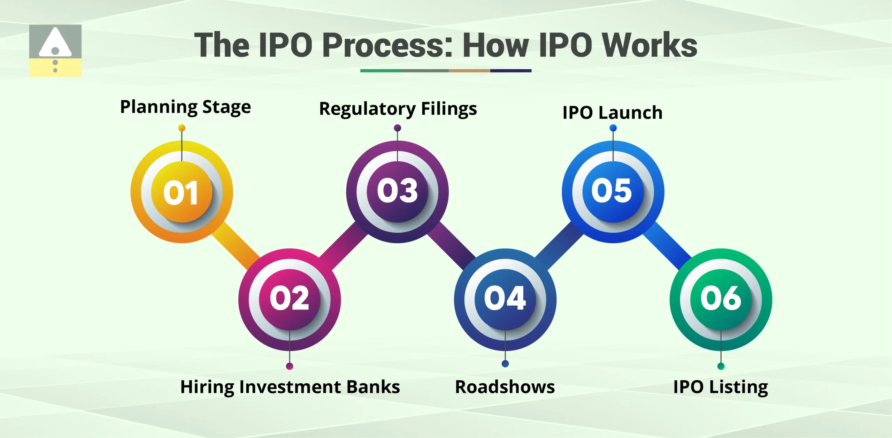

Comprehensive IPO process support — from origination, structuring, and regulatory coordination to investor engagement, marketing, and post-listing compliance.
Ozzuno provides end-to-end support for companies seeking to go public. We simplify the IPO journey by aligning promoters, investors, regulators, and markets under a seamless process, ensuring timely execution and compliance.
✅ Experience with multiple sectors and IPO sizes (SME to Main Board)
✅ Strong network with institutional investors & market makers
✅ Tech-enabled dashboards for real-time monitoring
✅ Post-listing compliance and governance support
⚠️ IPO investments and listings are subject to market risks and regulatory timelines. Past performance is not indicative of future outcomes.